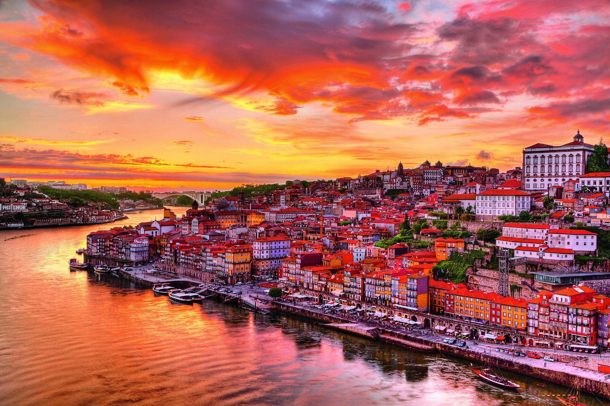

Lisboa, capital de Portugal, combina história e vida contemporânea. Suas ruas de pedra, fachadas de azulejos e miradouros revelam paisagens encantadoras, enquanto bairros como Alfama e Belém convidam a conhecer as tradições locais. Às margens do rio Tejo, a cidade também se destaca pela música, pela gastronomia e pelo clima acolhedor.
Fonte: Wikipedia